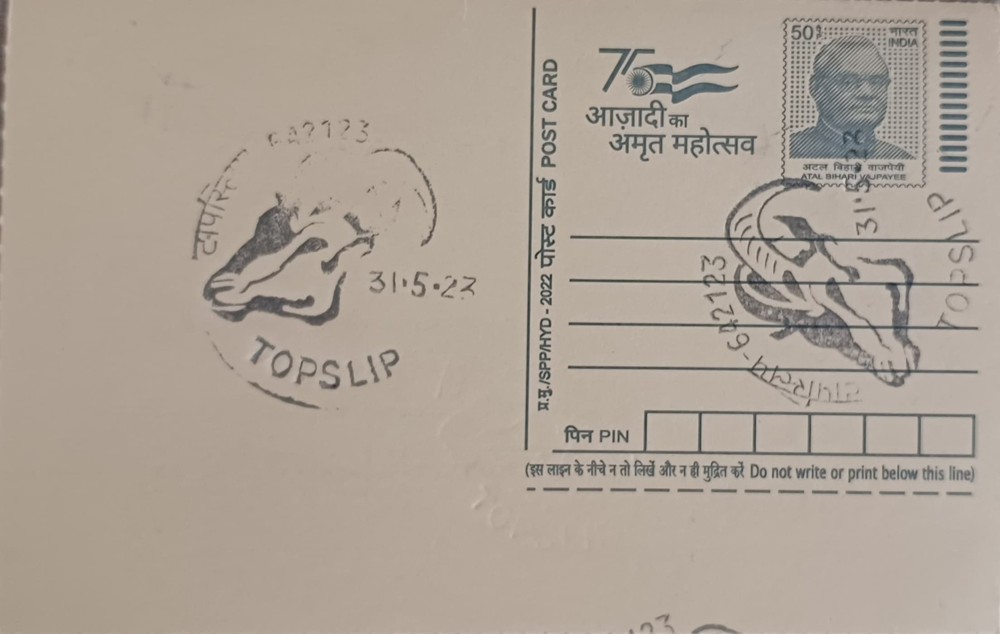

Nilgiri Tahr
நீலகிரி தார்


The Nilgiri tahr derives its scientific name, Nilgiritragus hylocrius, from Greek roots meaning "mountain-dwelling goat of the Nilgiris," a reference to the high-altitude ranges of South India where it was first described in the nineteenth century. Though long classified alongside the Himalayan and Arabian tahr under the genus Hemitragus, genetic studies eventually placed it in its own distinct genus, reflecting its isolated evolutionary path within the Western Ghats. Tamil speakers traditionally know it as the "varai aadu," or cliff goat, a name that captures its characteristic habit of balancing on near-vertical rock faces far above the shola forests, long before formal taxonomy gave it a Latin designation.
Within the Bovidae family, the Nilgiri tahr occupies a singular position as the only mountain ungulate native to peninsular India south of the Himalaya, and it was designated the official state animal of Tamil Nadu in recognition of that uniqueness. The IUCN lists it as Endangered, and a landmark synchronised census conducted jointly by Tamil Nadu and Kerala in April 2025 counted roughly 2,668 individuals across both states, with Tamil Nadu accounting for about 1,303 of them. Its presence in the grasslands around Top Slip, part of the Indira Gandhi Wildlife Sanctuary within the wider Anamalai Hills landscape, links this post office to one of the species' recognised strongholds alongside Eravikulam and the Grass Hills further south.
Adult males, known as "saddlebacks" once they mature past roughly eight or nine years of age, develop a pale grey patch across the back that contrasts with their otherwise dark brown coat, while females and younger males remain a more uniform tawny brown with a short, bristled mane along the neck. Males can stand close to a metre at the shoulder and weigh upwards of 80 to 100 kilograms, considerably heavier than females, and both sexes carry curved horns that are more sharply ridged in males. The species favours a mosaic of steep rocky outcrops for refuge and adjoining montane grasslands for grazing, feeding on grasses, herbs and shrubs within the shola-grassland ecosystem that defines the upper reaches of the Western Ghats above roughly 1,200 metres elevation.
A particular threat recorded in recent years has been outbreaks of sarcoptic mange among tahr populations in parts of their range, which prompted wildlife veterinarians to undertake targeted treatment and monitoring interventions to prevent localised die-offs. The species' fragmented distribution, now reduced to an estimated 20 or so isolated subpopulations scattered across Tamil Nadu and Kerala, has made such disease events especially consequential, since a single outbreak can disproportionately affect a small, geographically cut-off herd. The Anamalai population, ranging through the hills around Top Slip and into the adjoining Parambikulam and Anamalai Tiger Reserve landscape, forms one of these connected units, with radio-collaring studies helping researchers track ranging patterns and genetic exchange between herds.
The Tamil Nadu Forest Department launched Project Nilgiri Tahr in 2022 as a five-year, state-funded programme running through 2027, with mandates covering biennial synchronised surveys, disease surveillance, radio-collar monitoring, habitat corridor restoration and the eventual reintroduction of tahr into historical range areas such as the Grass Hills and the Mukurthi landscape. The project's most recent count, released in 2026, recorded a further rise in Tamil Nadu's tahr numbers to 1,364 individuals, an increase attributed partly to these coordinated conservation measures. Forest officials stationed in the Anamalai and Indira Gandhi Wildlife Sanctuary divisions continue to oversee monitoring and anti-poaching patrols in the Top Slip area today, work that ties this small postal outpost to one of the state's more closely watched wildlife recovery efforts.
| Date of Introduction | October 14, 1980 |
|---|---|
| Address | Branch Postmaster, |
| Top Slip BO, | |
| Coimbatore (dt.), Tamil Nadu - 642133. |